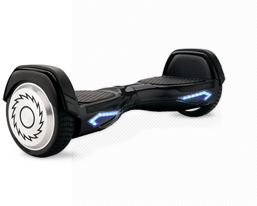

Преимущества
характеристики
для кого
Menu
RIzor
Hovertrax
4.0
Маневренность, легкость,
экологичность
Смотреть
видео
Преимущества
дизайн
Внешний вид скутера дышит
идеями футуризма:
плавные линии
подсветка светодиодными
индикаторами
рельефные бамперы,
оснащенные защитными
панелями
цвет
Модель представлена сразу
в нескольких цветах.

режимы
Помимо «умной» подсветки,
Hovertrax 4.0
снабжён двумя скоростными режимами.
Один для продвинутых пользователей
Второй для новичков
13
км/ч
Максимальная
скорость
2
Скоростных
режима
Смотреть
видео
для кого
При максимально выдерживаемой
нагрузке в
100
кг отлично подойдёт,
как для подрастающего поколения,
так и для более взрослых «наездников».
Это единственный гироскутер со
специальным детским режимом
езды.
перейти в каталог